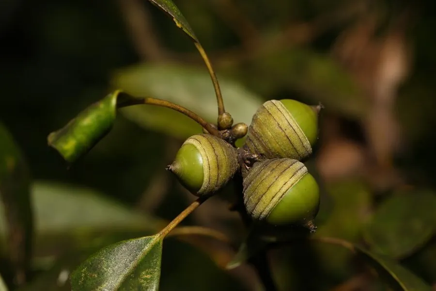

乔木 · 植物界
青冈 Cyclobalanopsis glauca

中国南方常绿阔叶林的主要树种，叶片厚革质、背面灰白，木材坚硬，种子可制淀粉，是重要的乡土树种。
- 分类
- 门被子植物门纲木兰纲目壳斗目科壳斗科属青冈属
- 栖息环境
- 海拔 1500 米以下的常绿阔叶林与丘陵山地，耐阴喜湿润
- 地理分布
- 中国长江流域以南及华南、西南地区
- 保护级别
- 暂无评估；中国未列入国家重点保护野生植物名录
物种志
青冈为常绿乔木，高可达 20 m，树皮灰褐色、平滑；叶片互生，椭圆形至倒卵状椭圆形，革质，边缘中部以上具锯齿，叶背被灰白色蜡质粉层，故得名“青冈”。花期 4–5 月，雄花序下垂，雌花序穗状；壳斗杯形，苞片环状排列，坚果卵圆形，成熟时褐色。
青冈分布于中国长江流域以南及华南、西南地区，喜温暖湿润、耐阴，适宜深厚肥沃的酸性土壤，是亚热带常绿阔叶林的主要建群种。木材坚硬、耐腐，可供建筑、家具、车辆与农具用；种子含淀粉，可制豆腐或酿酒；树皮与壳斗可提取栲胶。青冈根系发达，是水土保持与水源涵养的优良树种，也是薪炭林的重要树种。
形态与习性
- 株高可达 20 m，树皮灰褐色
- 花期4–5 月，雄花序下垂
- 果期10–11 月，坚果卵圆形
- 光照耐阴，幼树喜庇荫
- 土壤深厚肥沃的酸性壤土
- 主要用途建筑与家具用材、种子制淀粉、薪炭
趣味知识
- 青冈叶片背面有灰白色蜡质粉层，远看泛白，因此得名“青冈”。
- 青冈的种子含淀粉，磨粉后可制“青冈豆腐”或酿酒。
- 青冈耐阴，是亚热带常绿阔叶林的主要建群种之一。